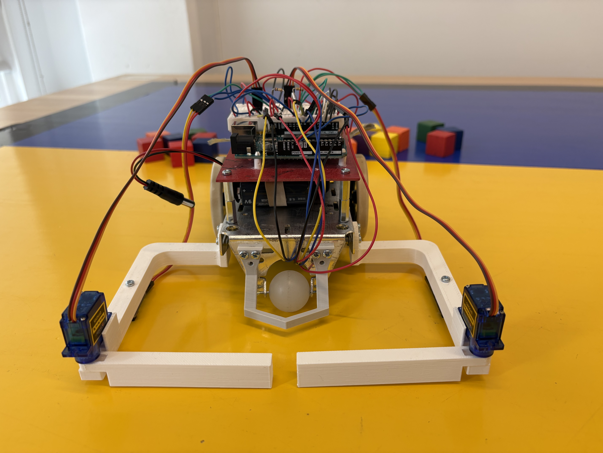
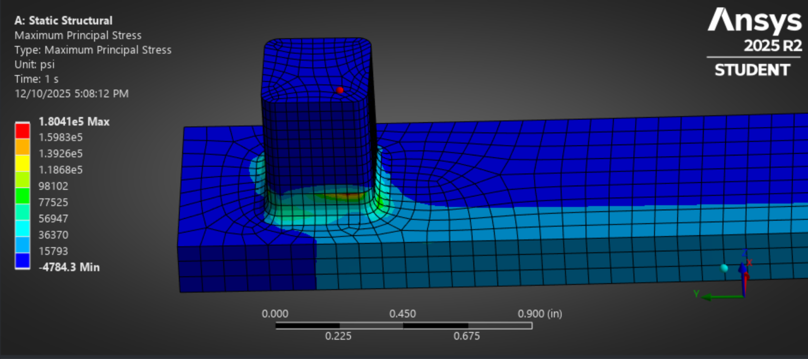
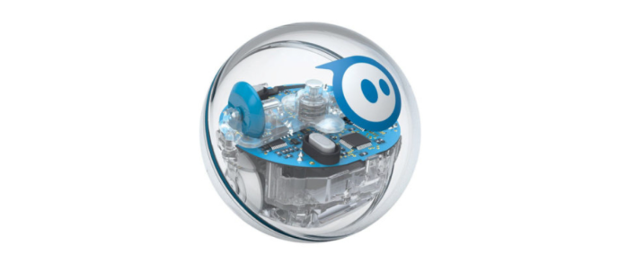

Selected work
Projects
Coursework and design projects focused on mechanical analysis, physical modeling, robotics, CAD, and technical communication.

Beanstalk Farms
Analyzed process waste and developed mechanical systems to improve harvest yield, throughput, and packaging reuse.

Robot Felix
Built and programmed a block-collecting robot for a final competition, combining CAD, controls, and testing.

Bike Share Frame Redesign
Redesigned a 6061 aluminum frame for step-through usability, then optimized tube thickness to meet safety targets.

Ansys Analyses
Studied turbine modal behavior and pressure-vessel structural response, including prestress and mesh convergence.

Solar Boat
A short video demonstration of the boat's propulsion assembly during testing.

Torque Wrench Design
Designed, modeled, and analyzed a torque wrench using material selection, FEA, and strain gauge calculations.

Sphero Robot Model
Modeled robot dynamics with ODEs, transfer functions, block diagrams, and frequency-response analysis.

Air Compressor Dissection
Connected a physical compressor teardown to fluid mechanics concepts, measured flow, and power analysis.